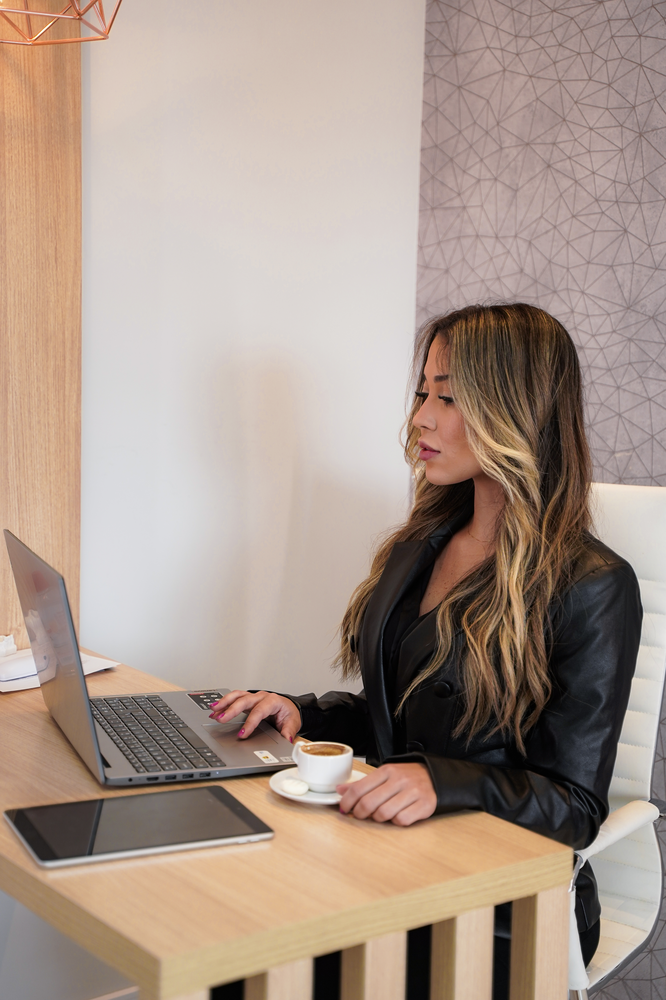
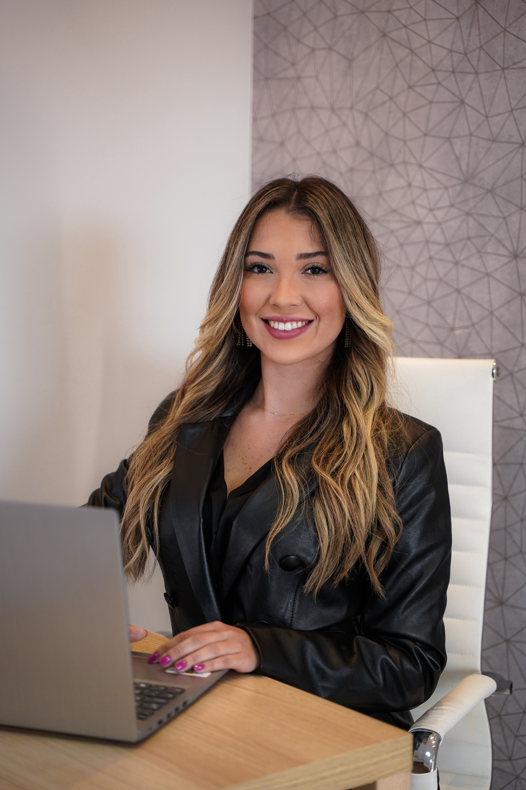
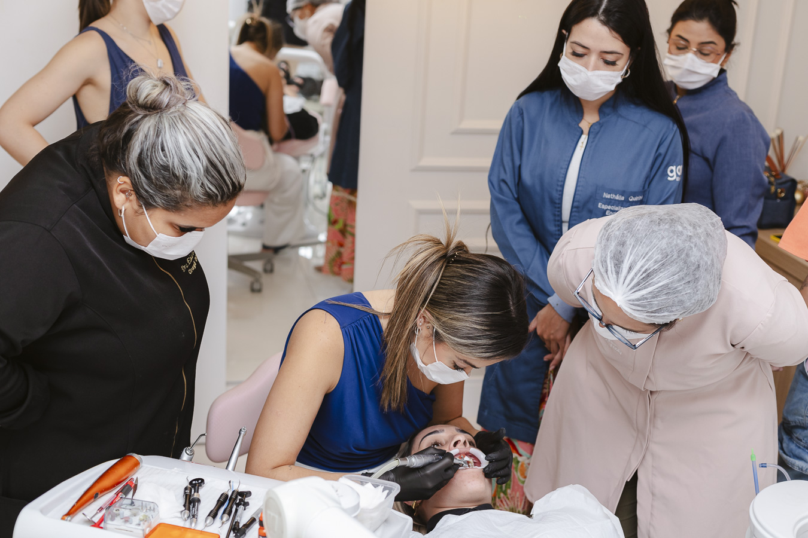

Scripts Comerciais
Scripts desde o primeiro contato no WhatsApp até agendamento, follow-up e fechamento.
Você terá a nossa metodologia, nosso acompanhamento e nossa experiência dedicados à construção da sua operação.
Faça a sua aplicação para a Operação 50K e aguarde nosso time entrar em contato ↓
Você já tem alguns pacientes, já atende e já fatura alguma coisa.
O problema não é falta de paciente. É que mesmo com muito esforço, seu resultado não aumenta todo mês.
O que separa um mês de R$20 mil para um de R$50 mil é um método que une posicionamento, aquisição, comercial e produto e faz toda a diferença na hora de atrair pacientes de lentes, converter oportunidades e aumentar o valor dos seus casos.
São esses ajustes que nós vamos identificar na sua clínica.
E que vão te fazer recuperar o investimento na Operação 50K com novos casos de lentes.
Construa uma marca que faça o paciente desejar realizar lentes com você.
Faça mais oportunidades de pacientes de lentes chegarem até você.
Transforme as oportunidades que chegam em avaliações e novos casos.
Evolua seus casos e aumente o valor percebido do seu trabalho.

E em todas elas, você terá alguém ao seu lado.
Começamos entendendo sua clínica, seus números, seus casos e sua estrutura atual.
Encontros com Larissa e Lucas ao longo dos seis meses para direcionamento dos quatro pilares.
Encontros individuais para analisar, ajustar e implementar as estratégias dentro da sua clínica.
Acompanhamento durante os seis meses para dúvidas, direcionamentos e execução.
A metodologia clínica utilizada diariamente nos casos de lentes.
Estratégia aplicada à construção e crescimento da operação.
Materiais, estruturas e referências para facilitar sua implementação.
Vamos trabalhar a construção da sua marca pessoal, organização do perfil, comunicação dos seus diferenciais e uma estratégia de conteúdos baseada em Venda, Educação, Conexão e Desejo.
Você vai entender o que mostrar, como utilizar seus casos, como construir autoridade e como transformar seu perfil em uma ferramenta capaz de despertar o desejo do paciente pelas suas lentes.
Vamos estruturar suas estratégias de aquisição, campanhas, anúncios, criativos e ofertas para colocar seu trabalho na frente de mais potenciais pacientes.
Você vai entender como construir campanhas, analisar seus resultados e identificar o que precisa ser ajustado para aumentar a entrada de novas oportunidades na sua clínica.
Vamos estruturar toda a jornada comercial do paciente, desde o primeiro contato no WhatsApp até o fechamento do tratamento.
Você vai trabalhar atendimento, qualificação, agendamento, confirmação, follow-up, avaliação, quebra de objeções e fechamento para deixar de perder oportunidades por falta de processo comercial.
Através do Método Bulhões, vamos trabalhar o raciocínio clínico por trás dos casos, passando por planejamento, anatomia, escolha dos materiais, técnica, estratificação, acabamento e polimento.
O objetivo é fazer a evolução do seu produto acompanhar o crescimento da sua clínica, aumentando a percepção de valor do seu trabalho e sua capacidade de cobrar mais pelos casos.

Scripts desde o primeiro contato no WhatsApp até agendamento, follow-up e fechamento.
Estruturas e referências para conteúdos de Venda, Educação, Conexão e Desejo.
Estruturas de campanhas e ações comerciais para gerar oportunidades de pacientes de lentes.
Referências para anúncios, chamadas, criativos e comunicação.
Sequências para recuperar pacientes interessados.
Estrutura para organizar leads, agendamentos, follow-ups, avaliações e fechamentos.

Treinamento gravado com a metodologia clínica utilizada diariamente nos casos de lentes.
Treinamento gravado com a metodologia aplicada à construção e crescimento da operação.
Materiais, estruturas e referências para apoiar sua implementação.
Além de todo o acompanhamento, você recebe dois bônus.

Acompanhe um caso real ao vivo com Larissa e veja de perto a tomada de decisão, execução clínica e aplicação do Método Bulhões.

Estrutura para organizar leads, agendamentos, follow-ups, avaliações e fechamentos.


Trabalham muito, faturam pouco e sentem que poderiam ganhar mais através das lentes.
Realizam lentes, mas não conseguem atrair novos pacientes com a frequência que gostariam.
Não sabem o que postar, não têm constância e não conseguem se posicionar como referência.
Carregam a clínica sozinhos, cuidando de casos, agenda, WhatsApp, marketing e comercial.
Sentem insegurança para cobrar mais e aumentar o valor dos seus casos.
Querem transformar as lentes em uma das principais fontes de faturamento da clínica.
.JPG)
A Dra. Larissa Bulhões começou a trabalhar com lentes em resina ainda no primeiro ano de formada e transformou esse procedimento em um dos pilares da sua carreira e da Bulhões Odontologia, clínica que hoje fatura múltiplos 7 dígitos ao ano.
Ao longo dos anos, aperfeiçoou sua própria forma de executar os casos: simplificar a técnica sem simplificar o resultado.
Foi assim que nasceu o Método Bulhões, aplicado diariamente em seus pacientes e ensinado a outros dentistas.

Lucas é responsável pelas estratégias de marketing, aquisição e comercial aplicadas dentro da Bulhões Odontologia.
Atua diretamente na construção de campanhas, processos comerciais, CRM e indicadores.
Dentro da Operação 50K, estará ao seu lado nos pilares de Posicionamento, Aquisição e Comercial.
A sua dúvida pode estar aqui:
Sim. Vamos trabalhar tanto a evolução do seu produto quanto a atração de novos pacientes de lentes.
Sim. Vamos identificar os pontos que estão limitando o crescimento do faturamento através das lentes.
A Operação combina 12 mentorias, 6 calls individuais e acompanhamento durante a implementação.
Não necessariamente. As estratégias serão direcionadas considerando a estrutura e os recursos atuais da sua clínica.
São seis meses com mentorias quinzenais, calls individuais e Grupo VIP de acompanhamento.
Não. Você pode começar com a estrutura que possui hoje. O objetivo é evoluir para uma operação em que o dentista consiga focar nos casos e exista alguém responsável pelo comercial e agenda.
Você terá a nossa metodologia, nosso acompanhamento e nossa experiência dedicados à construção da sua operação.
Faça a sua aplicação para a Operação 50K e aguarde nosso time entrar em contato ↓